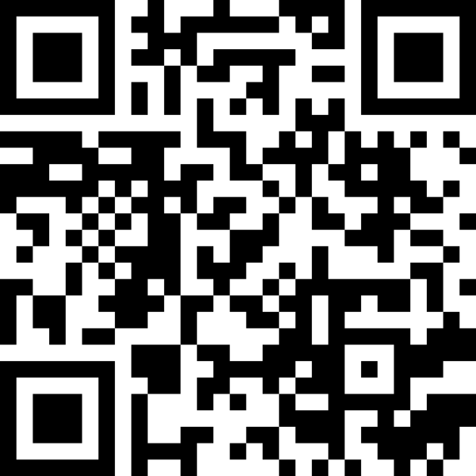

Consultant SEO · Ads · Automatisation IA
Ayoub Yatouji
J’aide les marques à améliorer leur visibilité et leurs performances digitales.
Voir mon portfolio ↗
Me contacter sur WhatsApp ↗
Télécharger mon CV ↓
Outils marketing gratuits ↗
LinkedIn ↗

Ouvrir ma carte de visite numérique